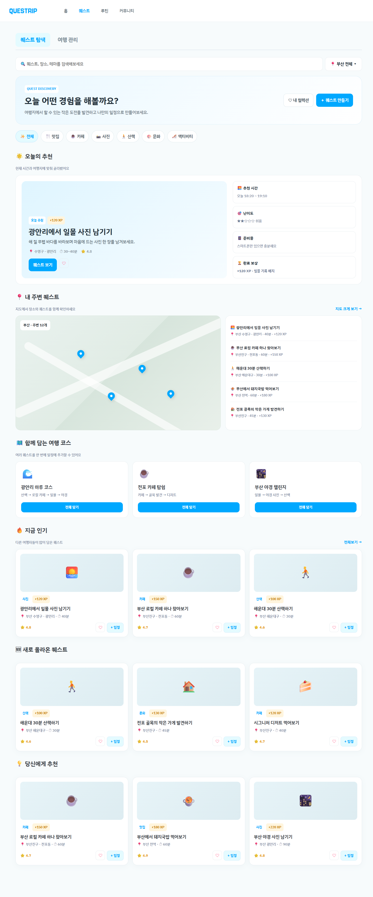
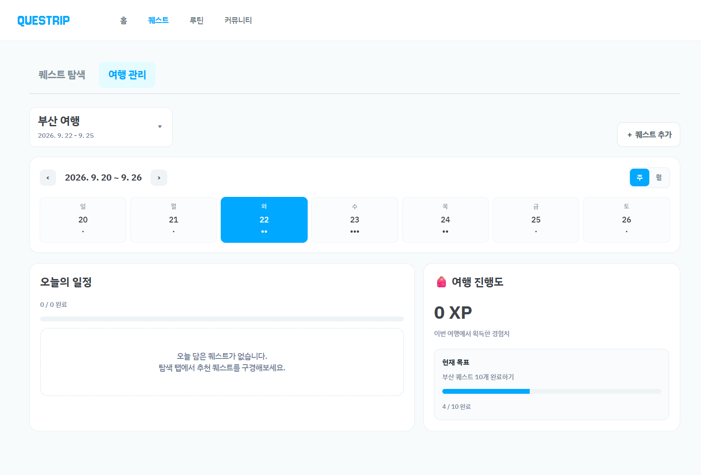
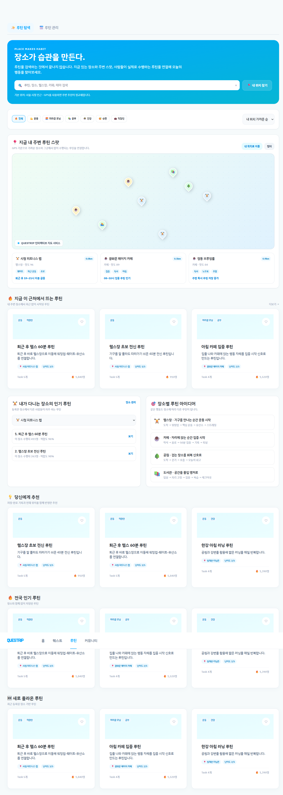
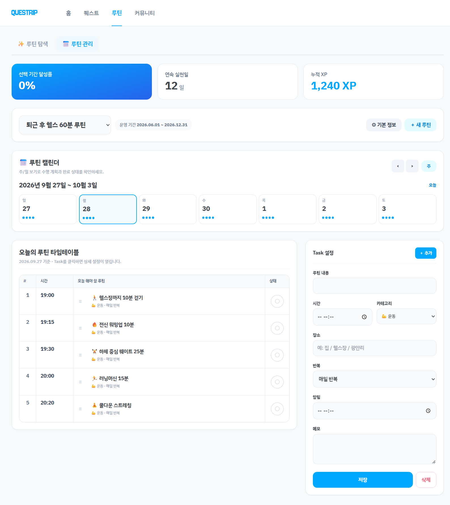
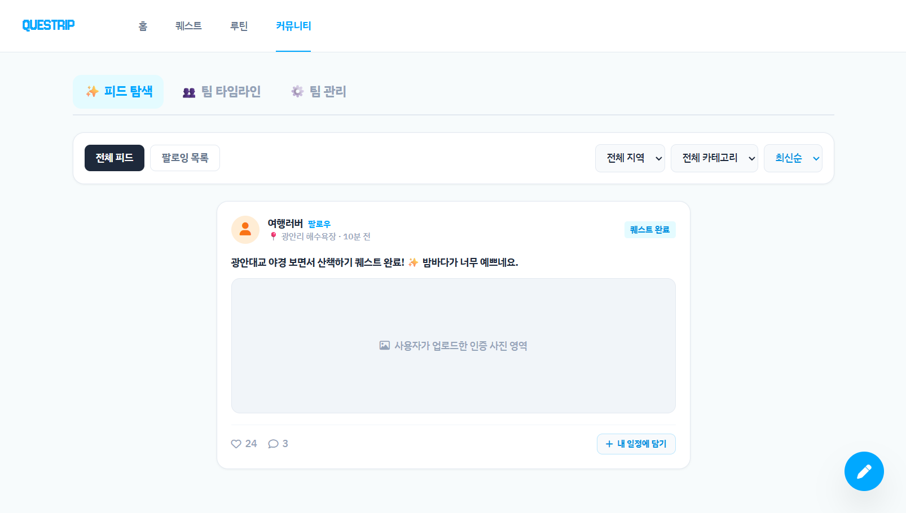
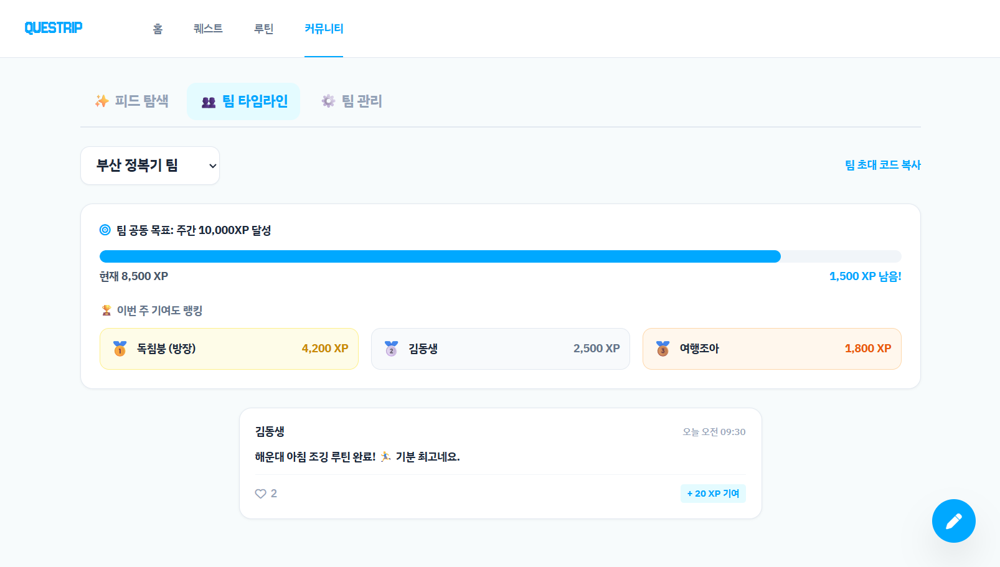
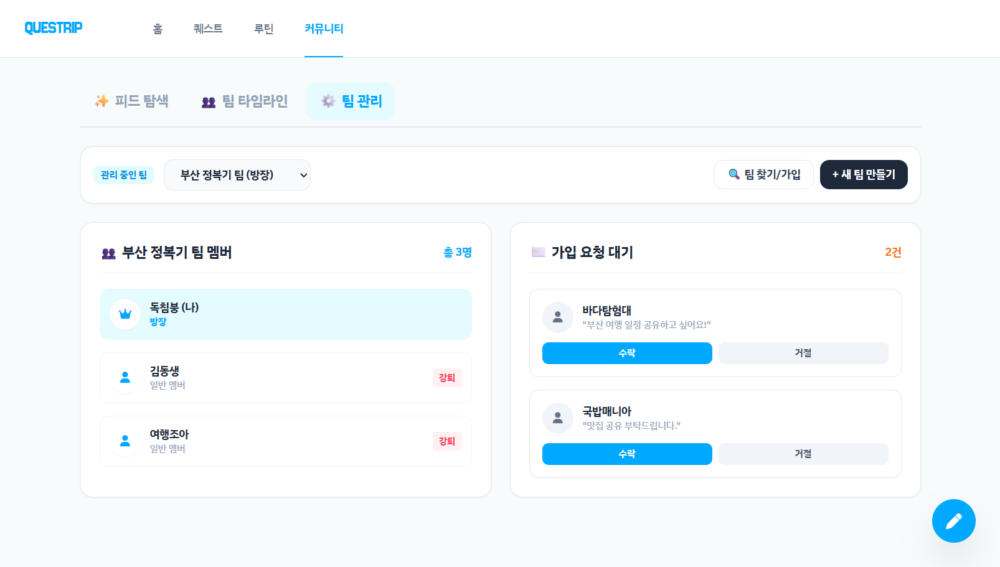

QUESTRIP
Screen Specification Document
QUESTRIP 화면설계서
한 발짝으로 시작되는 습관 — 여행 퀘스트 × 습관 루틴 통합 서비스의 온보딩부터 홈, 퀘스트, 루틴, 커뮤니티까지 전 화면에 대한 구조·기능·데이터 정책 명세서입니다.
| 문서 버전 | v1.0 | 작성 기준 | 기능설계서 |
| 대상 화면 | 총 8개 화면 (온보딩 4 · 홈 1 · 퀘스트 1 · 루틴 1 · 커뮤니티 1) |
| 디자인 시스템 | Primary #00A8FF · Accent #FFB142 · IBM Plex Sans KR / Jersey 10 |
A. 온보딩 · 인증
서비스 최초 진입 시 로그인 → 프로필 설정 → 위치 권한 순서로 진행되는 4단계 플로우
① 화면 개요
앱 최초 실행 시 진입하는 랜딩 화면. 로고와 슬로건을 노출하고 Google / X / Apple 소셜 로그인 버튼을 세로로 배치한다.
주요 타겟: 신규 사용자 / 비로그인 사용자
UI 프리뷰
O-00 온보딩(소셜 로그인) 화면 흐름도
② 레이아웃 및 UI 구조
- 전체 배치: Header/Footer 없이 화면 중앙 정렬 1단 카드 구조 (모바일 우선)
- 상단: 로고(QUESTRIP, Jersey 10) + 슬로건("한 발짝으로 시작되는 습관")
- 중단: 소셜 로그인 버튼 3종(Google/X/Apple) 세로 스택
- 하단: 이메일 로그인 보조 링크
③ 기능 정의
| # | 구분 | 컴포넌트 | 이벤트 | 상세 설명 및 동작 |
|---|
| 1 | 버튼 | Google 로그인 | 클릭 | Google OAuth 진행 후 성공 시 H-00 홈으로 이동(현재는 즉시 이동으로 대체 구현) |
| 2 | 버튼 | X 로그인 | 클릭 | X(Twitter) OAuth 진행 후 H-00 이동 |
| 3 | 버튼 | Apple 로그인 | 클릭 | Apple 로그인 진행 후 H-00 이동 |
| 4 | 링크 | 이메일 로그인 | 클릭 | O-01 이메일 로그인/회원가입 화면으로 이동 |
④ 데이터 및 정책
- 화면 내 표시 데이터 없음(정적 텍스트/버튼)
- 소셜 로그인 신규 사용자는 최초 1회 O-02(프로필/관심사) 설정 플로우로 강제 진입해야 함(현재 구현은 단순화되어 H-00로 직결)
- 이미 로그인된 세션(토큰 유효)일 경우 O-00을 거치지 않고 H-00으로 자동 리다이렉트 필요
① 화면 개요
이메일 기반 로그인과 회원가입을 하나의 화면에서 탭으로 전환해 처리하는 화면. 회원가입 시 이메일 중복확인 및 비밀번호 규칙 검증을 포함한다.
주요 타겟: 이메일 계정으로 가입/로그인하려는 사용자
UI 프리뷰
O-01 이메일 로그인/회원가입 화면
② 레이아웃 및 UI 구조
- 상단: 로고(클릭 시 O-00 이동)
- 탭 그룹: 이메일 로그인 / 회원가입 (2탭, 상태에 따라 하단 폼 필드 가변)
- 폼 영역: 이메일 입력(+중복확인 버튼, 회원가입 시만 노출) / 비밀번호 / 비밀번호 확인(회원가입 시만 노출)
- 하단: 제출 버튼(로그인/회원가입 라벨 가변)
③ 기능 정의
| # | 구분 | 컴포넌트 | 이벤트 | 상세 설명 및 동작 |
|---|
| 1 | 탭 | 이메일 로그인/회원가입 탭 | 클릭 | 탭 전환 시 입력값·검증 상태 초기화, 회원가입 탭에서만 중복확인 버튼·비밀번호 확인 필드 노출 |
| 2 | 입력 | 이메일 입력 | input | 회원가입 모드에서 값 변경 시 중복확인 완료 상태(isEmailChecked) 초기화 |
| 3 | 버튼 | 중복확인 | 클릭 | 이메일 형식 검증 → 서버 조회(현재는 'test@test.com'만 중복 처리) → 성공 시 안내 메시지 및 통과 플래그 설정 |
| 4 | 버튼 | 로그인/회원가입 제출 | 클릭 | 로그인: 이메일 형식·비밀번호 입력 검증 후 H-00 이동
회원가입: 중복확인 완료 여부 → 비밀번호 규칙(영문+숫자 8자 이상) → 비밀번호 확인 일치 검증 순서로 통과 시 O-02 이동 |
④ 데이터 및 정책
| 항목 | 규칙 |
|---|
| 이메일 | 정규식 ^[^\s@]+@[^\s@]+\.[^\s@]+$ 형식 검증, 회원가입 시 중복확인 필수 |
| 비밀번호 | 영문+숫자 포함 8자 이상 (특수문자 허용) |
| 비밀번호 확인 | 비밀번호와 일치해야 제출 가능 |
- 예외: 이메일 형식 오류 / 미중복확인 / 비밀번호 규칙 미달 / 비밀번호 불일치 시 각각 인라인 에러 메시지 노출 후 제출 중단
- 중복확인을 하지 않고 회원가입을 시도하면 alert로 재안내
① 화면 개요
회원가입 직후 진행되는 Step 1/2 온보딩 화면. 닉네임을 설정하고 관심사 테마 칩을 최대 5개까지 선택한다.
주요 타겟: 회원가입을 완료한 신규 사용자
UI 프리뷰
O-02 프로필 · 관심사 설정 화면
② 레이아웃 및 UI 구조
- 상단: Step 인디케이터(Step 1 of 2) + 타이틀/설명
- 닉네임 입력 영역: 1~30자 텍스트 필드
- 관심사 칩 그리드: 8종 테마 다중 선택 칩(#맛집, #카페, #액티비티, #사진, #산책/조깅, #독서/공부, #문화/예술, #힐링/자연)
- 하단 버튼 그룹: 건너뛰기 / 다음
③ 기능 정의
| # | 구분 | 컴포넌트 | 이벤트 | 상세 설명 및 동작 |
|---|
| 1 | 입력 | 닉네임 입력 | input | 최대 30자(maxlength) 제한, 공백만 입력 시 오류 처리 |
| 2 | 칩 | 관심사 테마 칩 | 클릭 | 선택/해제 토글, 이미 5개 선택된 상태에서 추가 선택 시 에러 메시지 노출 및 선택 차단 |
| 3 | 버튼 | 건너뛰기 | 클릭 | 입력값 검증 없이 관심사 미설정 상태로 O-03 이동 |
| 4 | 버튼 | 다음 | 클릭 | 닉네임 길이(1~30자) 검증 통과 시 O-03 이동, 실패 시 인라인 에러 + 포커스 이동 |
④ 데이터 및 정책
- 닉네임: 1~30자, 공백만으로는 저장 불가(trim 후 검증)
- 관심사 테마: 0~5개 선택 가능(필수 아님), 5개 초과 선택 시도 시 안내 메시지 노출
- Empty 처리 없음(최초 진입 시 모든 필드 빈 상태가 기본값)
① 화면 개요
온보딩의 마지막 Step 2/2 화면. GPS 기반 퀘스트·루틴 탐색과 장소 인증 기능 사용을 위해 위치 권한 동의를 요청한다.
주요 타겟: 프로필 설정을 마친 신규 사용자
② 레이아웃 및 UI 구조
- 상단: Step 인디케이터(Step 2 of 2) + 위치 아이콘(📍) + 타이틀/설명
- 하단 버튼 그룹: 위치 허용하기(Primary) / 나중에 하기(Secondary), 세로 스택
③ 기능 정의
| # | 구분 | 컴포넌트 | 이벤트 | 상세 설명 및 동작 |
|---|
| 1 | 버튼 | 위치 허용하기 | 클릭 | 브라우저 Geolocation API 호출 → 승인 시 좌표 획득 후 H-00 이동, 거부/에러 시에도 안내 후 H-00으로 이동(수동 지역 선택 모드 안내) |
| 2 | 버튼 | 나중에 하기 | 클릭 | 권한 요청 없이 H-00 이동, 이후 지도/탐색 화면에서 수동 지역 선택 UI로 대체 |
④ 데이터 및 정책
- Geolocation 미지원 브라우저: 안내 메시지 후 H-00 이동
- timeout 10초, maximumAge 0(캐시 좌표 미사용)으로 항상 최신 위치 요청
- 권한 거부/타임아웃 시에도 서비스 이용이 차단되지 않도록 홈 진입은 항상 허용
B. 홈
로그인 후 진입하는 메인 화면. 여행/루틴 현황을 한눈에 요약
① 화면 개요
로그인 사용자가 최초로 마주하는 홈 화면. 여행/루틴 관리 현황, 달성도 통계, 추천 퀘스트·커뮤니티 소식을 2×2 + 확장 그리드로 요약 제공한다.
주요 타겟: 로그인된 전체 사용자(일간 재방문 진입점)
② 레이아웃 및 UI 구조
- Header: 로고 + GNB(홈/퀘스트/루틴/커뮤니티, 현재 화면 active 표시)
- Main - 대시보드 2×2 그리드: ① 내 여행 관리 ② 내 루틴 관리 ③ 내 퀘스트 달성도 ④ 내 루틴 달성도
- Main - 추가 섹션(2열 카드): 오늘의 추천 퀘스트 / 커뮤니티 피드 하이라이트
- 공통 컴포넌트: 삭제 확인 Confirm Modal
③ 기능 정의
| # | 구분 | 컴포넌트 | 이벤트 | 상세 설명 및 동작 |
|---|
| 1 | GNB | 홈/퀘스트/루틴/커뮤니티 | 클릭 | 각 메뉴 클릭 시 H-00/Q-00/R-00/C-00으로 화면 전환, 현재 위치 메뉴는 active 스타일(파란 볼드) 표시 |
| 2 | 드롭다운 | 여행 상태 필터(진행중/예정/완료) | 선택 | 선택한 상태에 해당하는 여행 목록만 필터링하여 표시 |
| 3 | 버튼 | 여행 항목 - 수정 | 클릭 | Q-00#management(여행 관리 탭)으로 이동 |
| 4 | 버튼 | 여행 항목 - 삭제 | 클릭 | 공통 Confirm Modal 오픈 → 확인 시 삭제 처리 및 완료 알림 |
| 5 | 링크 | 여행 및 퀘스트 추가하기 | 클릭 | Q-00 퀘스트 화면으로 이동 |
| 6 | 드롭다운 | 루틴 상태 필터(활성/비활성) | 선택 | 선택 상태에 해당하는 루틴 목록만 필터링하여 표시 |
| 7 | 버튼 | 루틴 항목 - 수정 | 클릭 | R-00#manage(루틴 관리 탭)으로 이동 |
| 8 | 버튼 | 루틴 항목 - 삭제 | 클릭 | 공통 Confirm Modal 오픈 → 확인 시 삭제 처리 |
| 9 | 링크 | 루틴 추가하기 | 클릭 | R-00 루틴 화면으로 이동 |
| 10 | 통계 | 퀘스트/루틴 달성도 카드 | 읽기전용 | 달성/남은 퀘스트 수, 연속 달성일·완료/남은 할 일 수를 서버 집계값으로 표시 |
| 11 | CTA | 오늘의 추천 퀘스트 카드 | 클릭 | Q-00 퀘스트 탐색 화면으로 이동 |
| 12 | CTA | 커뮤니티 피드 카드 | 클릭 | C-00 커뮤니티 화면으로 이동 |
④ 데이터 및 정책
| 영역 | 표시 데이터 |
|---|
| 내 여행 관리 | 여행명, 여행 기간(시작~종료일) |
| 내 루틴 관리 | 루틴명, 반복 주기 |
| 퀘스트 달성도 | 달성한 퀘스트 수 / 남은 퀘스트 수 |
| 루틴 달성도 | 연속 달성일 / 달성한 할 일 / 남은 할 일 |
- Empty 상태: 여행/루틴이 없을 경우 각 카드 내부에 "등록된 여행(루틴)이 없습니다" 안내 문구와 추가 CTA만 노출(현재 화면 우측 상단 "[테스트] 데이터 유무 토글" 버튼으로 시뮬레이션 가능)
- 삭제는 반드시 Confirm Modal을 거쳐야 하며, 삭제 시 관련 하위 데이터(일정/기록)도 함께 제거됨을 모달 문구로 고지
- 네트워크 실패 등 에러 상태에 대한 재시도 UI는 현재 화면에 정의되어 있지 않아 별도 정책 수립 필요(개선 제안)
C. 퀘스트
여행 기반 퀘스트를 탐색·저장하고, 여행 일정에 담아 캘린더로 관리하는 화면
① 화면 개요
"퀘스트 탐색"과 "여행 관리" 2개의 메인 탭으로 구성된 화면. 탐색 탭에서는 지역/카테고리/정렬 기반으로 퀘스트·코스를 발견해 컬렉션에 저장하고, 관리 탭에서는 선택한 여행의 일정을 캘린더(주/월)와 체크리스트 형태로 관리·인증한다.
주요 타겟: 여행 중이거나 여행을 계획 중인 사용자


UI 프리뷰
Q-00 퀘스트 탐색 · 여행 관리
② 레이아웃 및 UI 구조
- Header: 공통 GNB(퀘스트 active)
- 메인 탭: 퀘스트 탐색 / 여행 관리(담은 퀘스트 수 뱃지 표시)
- [탐색 탭] 검색바 영역: 통합 검색, 지역 선택, 카테고리/정렬 셀렉트, 내 컬렉션 버튼
- [탐색 탭] 섹션: 지금 인기 / 새로 올라온 퀘스트 / 당신에게 추천 / 함께 담는 여행 코스 (카드 그리드)
- [탐색 탭] 검색 결과 모드: 검색어 입력 시 홈 섹션을 대체하는 결과 그리드로 전환
- [관리 탭] 상단: 현재 여행 선택 바 + 여행 전환 버튼
- [관리 탭] 캘린더: 주/월 보기 전환, 이전/다음 이동, 날짜별 예정 일정 표기
- [관리 탭] 통계: 오늘 진행률(Progress bar), 획득 XP
- [관리 탭] 오늘의 퀘스트 리스트: 체크박스형 완료 처리, 항목별 메뉴(⋮)
- 모달 8종: 지역 선택, 내 컬렉션, 코스 상세, 퀘스트 상세, 여행 선택, 인증(사진/위치/후기), 일정 편집(변경/수정/삭제), 컨텍스트 메뉴
③ 기능 정의
| # | 구분 | 컴포넌트 | 이벤트 | 상세 설명 및 동작 |
|---|
| 1 | 탭 | 퀘스트 탐색 / 여행 관리 | 클릭 | 탭 전환, 여행 관리 탭 진입 시 캘린더·오늘의 퀘스트 재렌더링 |
| 2 | 검색 | 통합 검색창 | input | 입력 즉시 퀘스트/장소/테마 대상 실시간 검색, 결과 모드로 전환되며 홈 섹션은 숨김 |
| 3 | 모달 | 지역 선택(📍) | 클릭 | 지역 모달 오픈 → 다중 선택 후 적용 시 지역 필터 반영 및 탐색 결과 갱신 |
| 4 | 셀렉트 | 카테고리 / 정렬(인기·최신·쉬운·XP순) | 변경 | 선택 즉시 탐색 결과 재계산 |
| 5 | 카드 | 퀘스트 카드 - 저장(♡) | 클릭 | 내 컬렉션에 저장/해제 토글 |
| 6 | 카드 | 퀘스트 카드 - 담기(add) | 클릭 | 현재 선택된 여행 일정에 퀘스트 추가, 이미 담긴 경우 "담김" 상태로 비활성 표시 |
| 7 | 모달 | 내 컬렉션 | 클릭 | 저장한 퀘스트를 폴더별로 조회, 일정 담기/삭제 가능, 새 폴더 생성 가능 |
| 8 | 모달 | 여행 선택/전환 | 클릭 | 보유한 여행 목록 조회 후 전환, 신규 여행 생성(이름/시작일/종료일 입력) 가능 |
| 9 | 캘린더 | 주/월 보기 전환 · 이전/다음 | 클릭 | 선택 보기 단위에 맞춰 캘린더 그리드 재계산, 날짜 클릭 시 해당 일자로 컨텍스트 이동 |
| 10 | 체크박스 | 오늘의 퀘스트 완료 체크 | 변경(change) | 인증 방식이 있는 퀘스트는 인증 모달(사진/위치/한줄소감) 오픈 후 완료 처리, 인증이 없으면 즉시 완료 및 XP 적립 |
| 11 | 메뉴 | 항목 컨텍스트 메뉴(⋮) | 클릭 | 일정 변경(날짜 이동) / 수정(목표시간·알림·메모) / 삭제(일정만 삭제 or 완전 삭제) 서브 액션 제공 |
| 12 | 인증 | 인증 모달(사진/위치/텍스트) | 제출 | 인증 유형별 필수값 미입력 시 toast로 안내 후 제출 차단, 통과 시 완료 처리 및 +XP toast 노출 |
④ 데이터 및 정책
| 항목 | 설명 |
|---|
| 퀘스트 카드 | 아이콘, 제목, 장소, 소요시간(분), 획득 XP, 인증 방식(사진/위치/텍스트/없음) |
| 여행 정보 | 여행명, 시작일~종료일, 여행별 일정(planned)/완료(done) 목록 |
| 진행률 | 오늘 완료 수 / 오늘 전체 일정 수 기반 퍼센트 바 |
- Empty 상태: 담은 퀘스트가 없는 경우 "일정에 담은 퀘스트가 없습니다" 안내, 저장한 퀘스트가 없는 경우 컬렉션 모달 내 동일 형태 안내 노출
- 일정 삭제는 "일정만 삭제"(컬렉션 유지)와 "완전 삭제"(컬렉션까지 제거) 두 가지로 구분하여 사용자가 선택
- 완료된 퀘스트는 체크 해제가 불가하도록 별도 정책 수립 필요(현재 로직상 완료 후 재클릭 시 동작 미정의 - 개선 필요)
- XP는 완료 시점에만 적립되며 중복 적립 방지를 위해 done 목록에 없는 경우에만 가산
D. 루틴
장소 기반 습관 루틴을 탐색하고, 나만의 루틴 타임테이블로 관리하는 화면
① 화면 개요
"루틴 탐색"과 "루틴 관리" 2개 탭으로 구성. 탐색 탭에서는 지도 기반으로 장소·인기 루틴을 발견하고, 관리 탭에서는 활성화한 루틴의 Task를 요일별 캘린더/타임테이블 형태로 구성·실행한다.
주요 타겟: 반복 습관을 지역·장소와 연결해 관리하려는 사용자


UI 프리뷰
R-00 루틴 탐색 · 관리 화면
② 레이아웃 및 UI 구조
- Header: 공통 GNB(루틴 active)
- 메인 탭: ✨ 루틴 탐색 / 📅 루틴 관리
- [탐색 탭] 히어로 배너: "장소가 습관을 만든다" 슬로건 + 탐색 유도 카피
- [탐색 탭] 지도 영역: Leaflet 지도 + 장소 핀, 주변 장소 리스트(거리순)
- [탐색 탭] 섹션: 인기 루틴 / 신규 루틴 / 추천 루틴 / 주변 장소 기반 루틴 그리드, 필터(장소 유형) 및 검색/정렬
- [관리 탭] 요약 카드: 선택 기간 달성률, 연속 실천일, 누적 XP
- [관리 탭] 활성 루틴 선택 바: 셀렉트박스 + 운영 기간 표시 + 기본정보/새 루틴 버튼
- [관리 탭] 루틴 캘린더: 주/월 보기, 이전/다음/오늘 이동
- [관리 탭] 타임테이블: 선택 날짜의 Task 목록(시간순), 우측 Task 설정 폼(등록/수정/삭제)
- 모달 2종: 루틴 상세(추천 장소, Task 목록, 내 루틴에 추가), 장소 상세(관련 인기 루틴 목록)
③ 기능 정의
| # | 구분 | 컴포넌트 | 이벤트 | 상세 설명 및 동작 |
|---|
| 1 | 탭 | 루틴 탐색 / 루틴 관리 | 클릭 | tab-active 스타일 토글 및 해당 영역만 표시(hidden 클래스 제어) |
| 2 | 지도 | 장소 핀(map-pin) | 클릭 | 장소 상세 모달(placeModal) 오픈, 지도 시점을 해당 좌표로 이동 |
| 3 | 필터 | 장소 유형 필터 / 검색 / 정렬 | 변경 | 선택 조건에 맞춰 루틴/장소 그리드 재계산 |
| 4 | 카드 | 루틴 카드 | 클릭 | 루틴 상세 모달(routineModal) 오픈, 추천 장소·적합도·수행 인원·Task 목록 표시 |
| 5 | 모달 | 루틴 상세 - 내 루틴에 추가 | 클릭 | 선택된 Task를 현재 활성 루틴에 import 후 루틴 관리 탭으로 전환, 완료 toast 노출 |
| 6 | 셀렉트 | 활성 루틴 선택(activeRoutineSelect) | 변경 | 선택한 루틴 기준으로 운영 기간·캘린더·타임테이블 재렌더링 |
| 7 | 캘린더 | 루틴 캘린더(주/월 전환) | 클릭 | 날짜 선택 시 해당 일자의 타임테이블로 전환, 오늘 버튼으로 현재 날짜 즉시 이동 |
| 8 | 폼 | Task 설정 폼(등록/수정) | 제출(submit) | 루틴 내용/시간/카테고리/장소/반복/알림/메모 입력 후 저장, 필수값(내용·시간) 미입력 시 브라우저 기본 검증으로 차단 |
| 9 | 버튼 | Task 삭제 | 클릭 | 선택된 Task를 타임테이블 및 폼에서 제거 |
| 10 | 체크 | Task 완료 체크 | 변경 | 완료 처리 시 취소선 스타일 및 진행률 통계 갱신 |
④ 데이터 및 정책
| 항목 | 설명 |
|---|
| 루틴 카드 | 이름, 카테고리 태그, 적합도(%), 수행 인원, 추천 장소, Task 목록(시간/내용/카테고리) |
| Task | 내용, 시간, 카테고리, 장소, 반복 주기(매일/평일/주말/사용자 지정/1회성), 알림 시간, 메모 |
| 관리 통계 | 선택 기간 달성률(%), 연속 실천일, 누적 XP |
- Empty 상태: 활성 루틴이 없는 경우 "루틴 관리" 탭 진입 시 새 루틴 생성 유도 필요(현재 화면 단독으로는 최소 1개 루틴 보유를 전제로 렌더링되어, 무(無)루틴 상태에 대한 빈 화면 정책 별도 정의 필요 - 개선 제안)
- 루틴 삭제(비활성화) 시 하위 Task 데이터 처리 정책(보관/완전삭제) 확정 필요
- 지도 표시 위치는 사용자 현재 위치(O-03 권한) 또는 최근 선택 지역을 기준으로 함
E. 커뮤니티
사용자 활동을 공유하고, 팀 단위로 목표를 함께 달성하는 화면
① 화면 개요
"피드 탐색 / 팀 타임라인 / 팀 관리" 3개 탭으로 구성된 소셜·협업 화면. 다른 사용자의 인증 피드를 구경·좋아요하고, 소속 팀의 공동 목표 진행 상황과 멤버를 관리한다.
주요 타겟: 소셜 동기부여를 원하거나 팀(그룹) 단위로 습관을 이어가는 사용자



UI 프리뷰
C-00 커뮤니티 · 팀 관리 화면
② 레이아웃 및 UI 구조
- Header: 공통 GNB(커뮤니티 active)
- 메인 탭: ✨ 피드 탐색 / 👥 팀 타임라인 / ⚙️ 팀 관리
- [피드 탐색 탭]: 전체 사용자 인증 피드 카드 리스트(좋아요/댓글), 새 피드 작성 진입점
- [팀 타임라인 탭]: 소속 팀 멤버들의 실시간 활동 타임라인
- [팀 관리 탭]: 팀 공동 목표(주간 XP) 진행 바, 팀 멤버 리스트, 가입 요청 대기 목록, 팀 찾기/새 팀 만들기
③ 기능 정의
| # | 구분 | 컴포넌트 | 이벤트 | 상세 설명 및 동작 |
|---|
| 1 | 탭 | 피드탐색/팀타임라인/팀관리 | 클릭 | switchTab()으로 tab-content 표시 전환 및 main-tab-btn 활성 스타일 갱신 |
| 2 | 버튼 | 새로운 피드 작성 | 클릭 | 피드 작성 폼/모달 오픈(인증 사진·소감 업로드) |
| 3 | 아이콘 | 좋아요(♥) | 클릭 | liked 클래스 토글로 좋아요 상태 표시, 좋아요 수 증감 |
| 4 | 버튼 | 내 일정으로 가져오기 | 클릭 | 타임라인 상 루틴/퀘스트를 본인 여행/루틴 일정에 추가 |
| 5 | 버튼 | 팀 찾기 및 가입 | 클릭 | 팀 검색 후 가입 요청 발송(승인 대기 상태로 전환) |
| 6 | 버튼 | 새 팀 만들기 | 클릭 | 팀명/공동목표 설정 후 팀 생성, 생성자는 자동으로 관리자 권한 부여 |
| 7 | 리스트 | 가입 요청 대기 승인/거절 | 클릭 | 대기 중인 가입 요청을 관리자가 승인 또는 거절 처리 |
④ 데이터 및 정책
| 항목 | 설명 |
|---|
| 피드 카드 | 작성자, 인증 사진/내용, 좋아요 수, 작성 시각 |
| 팀 정보 | 팀명, 공동 목표(예: 주간 10,000XP), 현재 달성 XP, 멤버 목록(역할 포함) |
- Empty 상태: 소속 팀이 없는 경우 "팀 관리" 탭에 팀 탐색/생성 CTA만 노출되어야 함(개선 제안)
- 좋아요·가입 요청 등 소셜 액션은 중복 클릭 방지를 위해 클라이언트 상태(liked class 등)와 서버 상태 동기화 필요
- 팀 관리(가입 승인, 멤버 추방 등) 기능은 팀 관리자 권한 사용자에게만 노출되어야 함